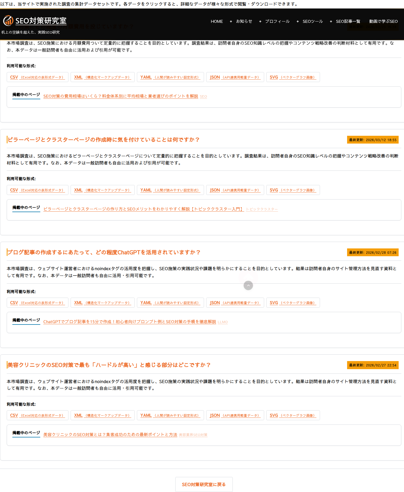

データセット公開
このプラグインの大きな特徴は、集めた投票結果を「データセット」として5つのファイル形式で自動生成し、専用ページから公開できることです。ここでは各形式の用途と、公開ページの構造を解説します。
5つのファイル形式
投票が入るたびに、集計データが次の5形式で自動的に生成・更新されます（保存先はアップロードディレクトリ配下で、プラグイン更新でも消えません）。
| 形式 | 主な用途 | 特徴 |
|---|---|---|
| CSV | Excel・表計算ソフト | BOM 付き。タイトル・選択肢・得票数・割合・調査期間・著作権/ライセンス情報を含む。数式インジェクション対策済み |
| XML | システム間のデータ交換 | メタデータ（タイトル・更新日時・調査期間・著作権・ライセンス）と集計を構造化 |
| YAML | 設定ファイル・自動化 | 人が読みやすい形式。スカラー値と選択肢リスト |
| JSON | API 連携・プログラム処理 | ID・タイトル・調査期間・総投票数・選択肢配列などを整形出力（Unicode そのまま） |
| SVG | ベクター画像・印刷 | 円グラフ画像。Dublin Core／CC のメタデータを埋め込み |
各形式には、割合（小数点2桁で丸め）や調査期間（最初の投票〜最後の投票）といった共通情報が含まれ、どの形式でも同じ集計内容を得られます。
専用ページと URL 構造
プラグインは /datasets/ 配下に、閲覧用の専用ページを自動生成します。
| URL | 内容 |
|---|---|
/datasets/ | 全データセットの一覧ページ |
/datasets/detail-123/ | 個別アンケートの詳細ページ（円グラフ・集計表・5形式のダウンロード） |
/datasets/csv/ | CSV 形式のデータセット一覧（xml / yaml / json / svg も同様） |
/datasets/csv/detail-123/ | 個別データの形式別ページ |
形式別ページ（例：/datasets/csv/detail-123/）の正規 URL（canonical）は、中央の詳細ページ /datasets/detail-123/ に集約されます。これにより、5形式のページが1つの正規 URL にまとまり、SEO 上の重複が避けられます。
データセット一覧ページ
/datasets/ には、公開中のアンケートがカード形式で並びます。各カードには質問文・説明・5形式へのリンク・掲載中の記事へのリンク・最終更新日時が表示されます。

データをまとめて生成する
通常はアンケートに投票が入るたびに各ファイルが自動更新されますが、導入直後や大量のデータを一度に作り直したいときは、基本設定ページの「データセット一括生成」で、公開中の全アンケート分をまとめて生成できます（基本設定ガイド参照）。